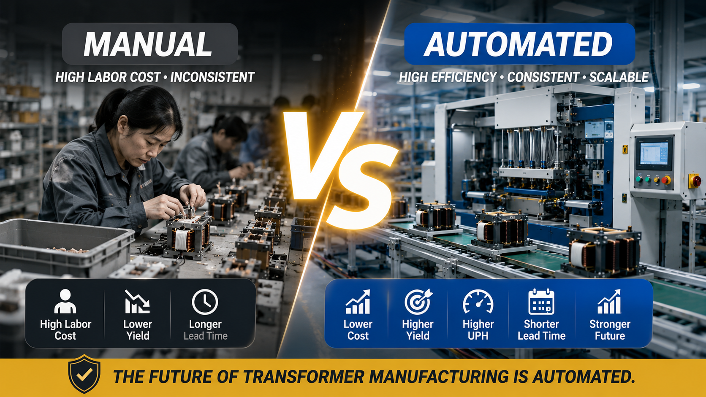

Manual vs Automated Transformer Production: Which Manufacturing Model Wins in 2026?

Summary
As global demand for high-frequency transformers continues to rise across electric vehicles, renewable energy, AI infrastructure, industrial electronics, and energy storage systems, manufacturers are under increasing pressure to deliver higher volumes without compromising quality.
For many transformer factories, the biggest question is no longer whether automation is possible, but whether manual production can remain competitive.
This article compares manual and automated transformer manufacturing across labor costs, production efficiency, product consistency, quality control, scalability, delivery performance, and long-term competitiveness to help manufacturers make informed investment decisions.
Technology
- High Frequency Transformer Manufacturing
- Transformer Factory Automation
- Multi-Axis Automatic Winding
- Automated Material Handling
- Vision Inspection System
- Electrical Testing Automation
- Smart Production Line
- Manufacturing Execution System (MES)
- Automatic Packaging
- Digital Factory Integration
Challenge
Many transformer manufacturers continue to rely on manual production because of lower initial investment costs.
However, today's manufacturing environment is changing rapidly.
Manufacturers now face:
Rising labor costs
Difficulty recruiting skilled operators
Increasing quality requirements
Shorter customer delivery times
More product variations
Higher production volumes
Stronger international competition
Factories that depend heavily on manual production often struggle to maintain consistent quality while expanding capacity, making it increasingly difficult to compete in global markets.
Solution
Automation transforms transformer manufacturing from labor-intensive production into a scalable, data-driven manufacturing system.
Rather than relying on operator experience, automated production lines standardize every critical process, including winding, assembly, testing, inspection, and packaging.
This enables manufacturers to produce more products with greater consistency while reducing operational risks caused by labor shortages and manual variation.
The goal is not simply replacing workers with machines, but building a manufacturing system capable of supporting long-term business growth.
Workflow & Layout
Manual Production：
Material Preparation
↓
Manual Winding
↓
Manual Assembly
↓
Manual Soldering
↓
Manual Testing
↓
Manual Inspection
↓
Packaging
Automated Production：
Automatic Material Feeding
↓
Multi-Axis Winding
↓
Automatic Assembly
↓
Automatic Soldering
↓
Electrical Testing
↓
Vision Inspection
↓
Automatic Sorting
↓
Packaging
Automation creates a continuous production flow with minimal interruption, improving both efficiency and production stability.
Results & ROI
- Comparison Manual Production Automated Production
- Labor Requirement High Significantly Reduced
- Product Consistency Operator Dependent Highly Consistent
- Production Capacity Limited Scalable
- Production Speed (UPH) Moderate Much Higher
- Quality Stability Variable Stable
- Defect Rate Higher Lower
- Delivery Performance Less Predictable More Reliable
- Capacity Expansion Difficult Easy
- Long-Term Manufacturing Cost Higher Lower
- Although automation requires higher initial investment
- manufacturers typically benefit from lower operating costs
- improved production efficiency
- and stronger competitiveness over the life of the factory.
Equipment List
- Typical automation equipment includes:
- Multi-Axis Automatic Winding Machines
- Automatic Material Feeding System
- Wire Processing Equipment
- Core Assembly Stations
- Precision Soldering System
- Glue Dispensing System
- Electrical Testing Equipment
- Vision Inspection System
- Automatic Sorting System
- Packaging Automation
- Conveyor System
- MES Integration (Optional)
Project Overview / Opening
For decades, transformer manufacturing relied heavily on experienced operators to perform winding, assembly, soldering, and inspection.
While this approach worked when labor costs were relatively low, today's manufacturing environment demands higher productivity, greater consistency, and faster response to changing customer requirements.
As demand from electric vehicles, renewable energy systems, industrial automation, and AI infrastructure continues to grow, manufacturers must rethink how factories operate.
Automation is no longer just a productivity improvement—it has become a strategic investment that determines long-term manufacturing competitiveness.
Key Points
- 📌 Labor shortages are increasing worldwide.
- 📌 Product quality requirements continue to rise.
- 📌 Customers expect shorter lead times.
- 📌 Production scalability has become essential.
- 📌 Automation improves consistency across every production batch.
- 📌 Digital production enables complete quality traceability.
- 📌 Long-term operating costs become significantly lower.
- 📌 Manufacturers investing today gain stronger competitive advantages tomorrow.
Implementation / Workflow
A successful automation project usually begins with evaluating current production capacity, labor utilization, and product mix.
Manufacturers then redesign production workflows to reduce manual handling and eliminate bottlenecks.
Core processes such as winding, assembly, soldering, testing, and inspection are integrated into a continuous automated production line.
Digital production management systems can further improve scheduling, quality traceability, equipment monitoring, and production analysis, allowing factories to operate with greater efficiency and predictability.
Customer Value / Results
Factory owners considering automation typically achieve benefits beyond labor savings.
Key business advantages include:
Lower dependence on skilled labor
Higher production output
Stable product quality
Better customer satisfaction
Reduced manufacturing costs over time
Faster response to market demand
Easier factory expansion
Improved global competitiveness
Stronger production management through digitalization
Automation allows manufacturers to build production systems that continue creating value for many years instead of constantly solving short-term labor challenges.
Conclusion / Next Step
The question in 2026 is no longer whether factory automation is technically possible, but whether manufacturers can remain competitive without it. As labor costs rise and customers demand higher quality, faster delivery, and greater production flexibility, automated transformer manufacturing has become a strategic advantage rather than a future option.
We help manufacturers worldwide design, source, integrate, and deliver industrial automation projects by leveraging China's manufacturing ecosystem. Whether you are evaluating automation for an existing transformer factory or planning a new production facility, our team can provide customized production line solutions, equipment sourcing, factory layout planning, and complete project integration.
Visit our Contact page to share your production goals or project requirements. We'll help you evaluate the most suitable automation strategy for your factory and support you from concept through successful project delivery.
SEO Title
Manual vs Automated Transformer Production: Which Manufacturing Model Wins in 2026?
SEO Description
As global demand for high-frequency transformers continues to rise across electric vehicles, renewable energy, AI infrastructure, industrial electronics, and energy storage systems, manufacturers are under increasing pressure to deliver higher volumes without compromising quality.
For many transformer factories, the biggest question is no longer whether automation is possible, but whether manual production can remain competitive.
This article compares manual and automated transformer manufacturing across labor costs, production efficiency, product consistency, quality control, scalability, delivery performance, and long-term competitiveness to help manufacturers make informed investment decisions.
Related Blog
Start with Your Business Challenge
Tell us about your warehouse, factory, or production requirements. We'll help you explore practical automation solutions and relevant project references.